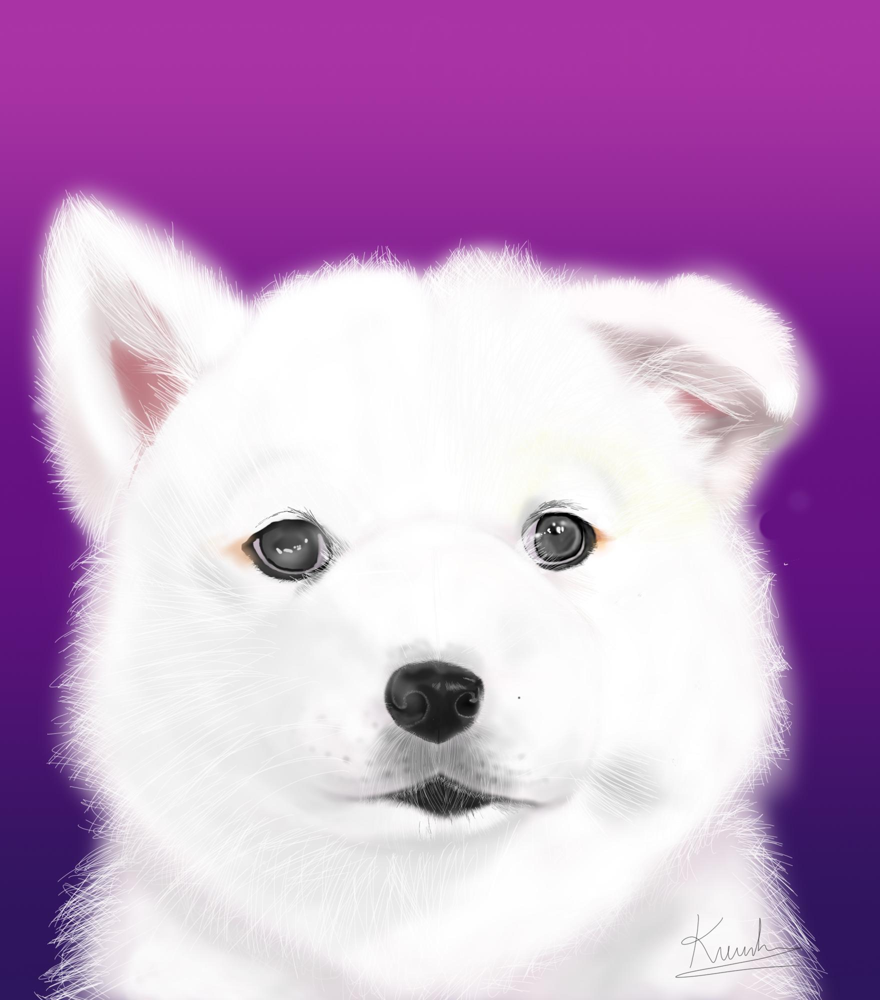

To me, design is a way to communicate with others with not just words. I have always been curious about how human beings think and feel. Through human senses, each individual has their very own feeling and experience that no other has. You would probably wonder why I did not choose humanities or psychology or other majors that related to human behavior,but design. I have always been interested in creating pretty things ever since I was a kid. As I create stuff, I often ask myself how the stuff that I created touch other people. I also wonder what they would think and feel as they look at my designed stuff like drawings, paintings, cards, little decorations stuff, and recently, digital designs. So, design to me is a direct way to learn, observe, and have a sense of how people would react, think, and feel when they see or touch something. Design is like a complicated language that I want to learn in order to communicate efficiently with the public.
I love to help people, especially the most vulnerable ones such as children and older adults. As the social network keeps growing bigger and faster, especially during the pandemic that moved many things to online, older adults need to adjust and learn to use technologies as well. I see my uncle who is in his 80s, my mom, my aunts, are struggling when it comes to smartphones and other technologies. For sure it is not easy for them to adopt these new techs which they usually complain to me that technologies are so complicated for them. Therefore, I want to help them with my UI/UX design skills that I am learning to help them have a better understanding of technologies and I also want them to feel more comfortable when using apps. That is why I want to be a good UI/UX designer; to help my mom, aunts, uncle, and other people like them have better experiences when using apps.